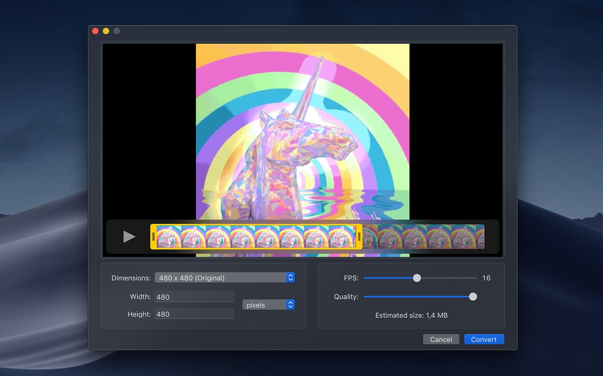

1. Boop 编程开发辅助神器（Swift）
Boop 是一款编程开发辅助应用。通过
command + b键即可快速帮助您进行 JSON 解析、URL编码解码、Base64解码编码、计算MD5哈希值、JWT解码、XML格式化、JSON转CSV、css格式化、Javascript压缩格式化、SQL格式化等等功能。需要注意的是通过command + b键调用出功能列表后，要使用上下箭头选择，回车键确认。
项目地址：https://github.com/IvanMathy/Boop
2. Hidden Bar 菜单栏图标隐藏工具（Swift）
Hidden Bar 是一款 macOS 菜单栏图标隐藏工具。使用方法：按住
⌘ Command键，拖动想要折叠的图标移到「｜」图标左侧就可以了，点击「>」箭头图标就可以直接隐藏菜单栏图标。不过要注意一个逻辑问题，「>」图标不能放置在「｜」图标左侧。
项目地址：https://github.com/dwarvesf/hidden
3. Dozer 隐藏Mac菜单栏图标（Swift）
Dozer 是一款隐藏macOS菜单栏图标的应用，不同于 Bartender 和 Vanilla，Dozer 是免费、开源的。Dozer 操作方法也很简单，Dozer运行后在菜单栏会出现一个「‧」，点击它，然后会出现另外一个「‧」，按住
command键拖曳「‧」调整到适当位置，然后点击一下「‧」就会隐藏第一个「‧」左边的图标，重新显示也只需要点击「‧」即可。
项目地址：https://github.com/Mortennn/Dozer

4. Mos 鼠标平滑滚动反转（Swift）
Mos 是mac上一款针对非原装鼠标不能平滑滚动的鼠标平滑滚动工具，Mos最主要的功能就是让你的鼠标滚动效果达到和妙控鼠标（Magic Mouse）/ 妙控板（Magic Trackpad）一样的如丝般顺滑的滚动体验。对于没有买妙控鼠标（Magic Mouse）的人来说这是一款神器。
项目地址：https://github.com/Caldis/Mos
5. IINA 视频播放器（Swift）
IINA 是一款采用现代设计和流线型功能的在线mac视频播放器，可以观看视频，管理播放列表，处理媒体内容或为电影加载字幕提等等。IINA mac可以加载本地文件或提供视频URL，IINA mac可以使用所有流行的媒体格式。而且您可以快速更改界面主题，调整默认行为和用户界面，决定是否要自动加载字幕，配置新的键绑定等。
项目地址：https://github.com/iina/iina

6. FSNotes 程序员笔记应用（Swift）
FSNotes 是一款本地的Mac笔记应用，支持markdown、rtf、txt格式，它将数据存储在本地文件系统中而非云端，安全，稳定。
项目地址：https://github.com/glushchenko/fsnotes
7. AltTab 窗口快速切换利器（Swift）
AltTab 是一款适用于 macOS 的窗口切换工具，将 Windows 的
alt-tab窗口切换功能带到了 macOS 中。用法：
- 按下
⌥ option + ⇥ tab显示窗口缩略图。- 继续按
⌥ option + ⇥ tab选择下一个窗口。- 按住
⌥ option + ⇧ shift + ⇥ tab选择上一个缩略图。- 松开
⌥ option以将焦点切换到窗口。
项目地址：https://github.com/lwouis/alt-tab-macos

8. Rectangle 开源Mac窗口管理应用（Swift）
Rectangle 是一款开源免费的 Mac 窗口管理工具。Rectangle 可以让用户使用键盘快捷键来移动和调整窗口大小。
项目地址：https://github.com/rxhanson/Rectangle
9. uPic Mac图床客户端（Swift）
uPic 是一款 Mac图床(文件)上传客户端，它可以将图片、各种文件上传到配置好的指定对象存储中，然后即时生成可供互联网访问的文件URL。支持图床： smms、 又拍云 USS、七牛云 KODO、 阿里云 OSS、 腾讯云 COS、微博、Github、 Gitee、 Amazon S3、自定义上传接口。无论是本地文件、或者屏幕截图都可自动上传，菜单栏显示实时上传进度。上传完成后文件链接自动复制到剪切板，返回的URL链接格式可以选择：普通 URL、HTML 或者 Markdown，非常灵活，推荐使用，比iPic强大！
项目地址：https://github.com/gee1k/uPic
10. OpenInTerminal 在当前目录打开终端（Swift）
OpenInTerminal 是一款开发辅助工具，可以在当前位置打开终端。主要功能：在终端（或编辑器）中打开当前目录以及在终端（或编辑器）中打开选择的文件夹或文件。
- 支持的终端： iTerm, Hyper 和 Alacritty
- 支持的文本编辑：Visual Studio Code, VSCode Insiders, Atom, Sublime Text, VSCodium, BBEdit，TextMate，CotEditor，MacVim 和 JetBrains(AppCode, CLion, GoLand, IntelliJ IDEA, PhpStorm, PyCharm, RubyMine, WebStorm)
- 设置为打开新的窗口或者标签页
- 将已选择的文件或者访达窗口的路径拷贝到粘贴板
- 支持键盘快捷键
- 支持 Dark Mode
项目地址：https://github.com/Ji4n1ng/OpenInTerminal
11. MonitorControl 菜单栏显示器音量亮度调节（Swift）
MonitorControl 是一款 macOS 菜单栏多显款器音量及亮度调节应用。相信很多 Mac 用户都是一台 MacBook 加一台外接显示器，但是你会发现 macOS 不能用键盘直接调节外接显款器的亮度和输出的音量。MonitorControl 的出现就是为了解决这个问题的，MonitorControl 不仅可以对外接屏的音量、亮度调节，还可以对外接屏的对比度进行调节，并可以自定义选择快捷键控制的类型，或是指定在某个屏幕启用这些功能，甚至连 ⇧Shift+⌥Option 这种微调音量控制都能支持。
项目地址：https://github.com/MonitorControl/MonitorControl
12. NetNewsWire RSS新闻订阅客户端（Swift）
NetNewsWire 是一款开源免费的 RSS订阅器，支持Safari扩展程序，可轻松添加Feed订阅，支持通过Feedbin同步，共享到邮件，MarsEdit，Micro.blog，便笺，消息等，支持AppleScript。
开源项目：https://github.com/Ranchero-Software/NetNewsWire
13. Karabiner-Elements 键盘键位修改神器（Swift）
karabiner-elements 一款开源的 macOS 键盘修改神器。可以将键盘上的某个键位映射为任意指定的其他键位。可以仅特定/同时对连接到 Mac 的键盘设备生效。支持虚拟键盘（ANSI, ISO, JIS）等。支持设置多套偏好设置，可根据场景切换使用
项目地址：https://github.com/pqrs-org/Karabiner-Elements
14. CotEditor 开源免费的文本编辑器（Swift）
CotEditor 是一款针对 macOS 开发的轻量级代码编辑器。CotEditor 启动非常快，支持 50 多种语言高亮，例如HTML、PHP、Python、Ruby、Markdown、Javascript等等。
项目地址：https://github.com/coteditor/CotEditor
15. Thor 通过快捷键快速打开应用（Swift）
Thor 是一款 Mac 效率类应用，可以针对指定的应用设计设置快捷键，通过指定的快捷键快速打开应用和切换应用。
项目地址：https://github.com/gbammc/Thor
16. LyricsX 菜单栏及桌面歌词显示（Swift）
LyricsX 是一款 Mac 桌面歌词及菜单栏歌词显示应用。可从网络自动搜索和下载当前播放歌曲的歌词并将其显示在桌面和菜单栏中，您可以自定义字体，颜色和位置，在状态菜单上调整歌词偏移，另外可以拖放导入歌词以及导出歌词文件。支持 iTunes、Spotify、Vox、Audirvana、Swinsian 等音乐播放器。歌词来源：网易云音乐、QQ音乐、酷狗音乐、虾米音乐、天天动听、歌词迷。
项目地址：https://github.com/ddddxxx/LyricsX
17. Pock 在TouchBar中显示Dock栏图标（Swift）
Pock 是一款可以将macOS Dock栏图标映射到触摸栏中显示工具。程序还附带了一些简约的小部件，比如时间，Wifi，电量、亮度控制、声音控制、正在播放等。
项目地址：https://github.com/pigigaldi/Pock
18. Stats 菜单栏系统监视器（Swift）
Stats 是一款macOS菜单栏系统监视工具。可以帮助您实时监视：CPU利用率、GPU利用率、内存使用情况、磁盘利用率、传感器信息（温度/电压/功率）、电池电量、网络使用等信息。
项目地址：https://github.com/exelban/stats
19. Gifski 从视频中提取gif动图（Swift）
Gifski for Mac 是一款可以将视频转换为GIF动画的应用。Gifski 支持 macOS 支持的所有视频格式（.mp4/.movH264/HEVC/ProRes 等等）。使用方法简单：只需将视频拖放到主界面，然后裁切需要时长的视频，设置尺寸（可以自定义宽度和高度）、FPS、质量，点击转换即可。
项目地址：https://github.com/sindresorhus/Gifski

20. Retroactive 解锁MacOS软件系统限制（Swift）
Retroactive (解印) 可让您在 macOS Catalina (10.15.x) 上运行iTunes，iPhoto和Aperture。还可以在 macOS Mojave (10.14.x) 解封 Xcode 11.4.1。 macOS Mojave 或macOS High Sierra 上解锁 Final Cut Pro 7，Logic Pro 9 或者修复 iWork '09。
项目地址：https://github.com/cormiertyshawn895/Retroactive
21. PicGo 跨平台图床软件
PicGo 是一款强大的mac图床工具，默认支持微博图床、七牛图床、腾讯云COS、又拍云、GitHub、SM.MS、阿里云OSS、Imgur，方便不同图床的上传需求。支持5种默认剪贴板链接格式：Markdown/html/url/ubb/自定义链接格式，让你的文本编辑游刃有余。2.0版本开始支持插件系统
项目地址：https://github.com/Molunerfinn/PicGo

22. Stretchly 休息提醒工具
Stretchly 是一款免费开源的 Mac 休息提醒工具。默认情况下，每10分钟有20秒的小憩，每30分钟有5分钟的长休息（在2个小憩之后）。您可以设置小憩与休息间隔、提醒声音、界面主题样式以及提醒模式，并提供可选的不可跳过休息模式。
项目地址：https://github.com/hovancik/stretchly

23. Terminus 支持SSH的mac终端模拟器
Terminus 是一个高度可配置的终端模拟器，适用于Windows，macOS和Linux。 主题和配色方案，完全可配置的快捷键，仿chrome标签页，保存最近打开的标签，集成的SSH客户端和连接管理器，完整的Unicode支持，包括双宽字符
项目地址：https://github.com/Eugeny/terminus

24. Electerm 终端模拟器/ssh/sftp客户端
Electerm 是一款集终端模拟器、文件管理器、ssh远程连接、sftp客户端为一体的工具（类似于xshell），允许双击直接编辑远程文件（小文件），使用内置编辑器编辑本地文件，使用publickey +密码验证，Zmodem（rz，sz），还有自定义终端样式，全局/会话代理，将书签/主题/快速命令同步到github secret gist等功能。
项目地址：https://github.com/electerm/electerm

25. 洛雪音乐 全网音乐播放下载工具
洛雪音乐 for mac是一款全网免vip无损音乐歌曲下载工具，LuoXue Music支持免vip下载歌典的平台：QQ音乐无损音乐下载、酷狗音乐无损音乐下载、酷我音乐无损音乐下载、百度音乐无损音乐下载、网易云音乐无损歌典下载。lx music，你值得拥有！
项目地址：https://github.com/lyswhut/lx-music-desktop

26. KeeWeb 跨平台密码管理器
KeeWeb for Mac是一款非常赞的密码管理器，KeeWeb与KeePass兼容的而且是跨平台的。KeeWeb在您浏览网站或者使用需要输入密码的应用中可以帮您自动填写已存储的密码。拥有密码生成器，支持密码生成规则，可以帮您生成最安全的密码！
项目地址：https://github.com/keeweb/keeweb

27. Buttercup 跨平台密码管理器
Buttercup for Mac 是一款精美简单的密码管理器，旨在帮助您管理凭据。Buttercup使用非常强大的加密功能，以一个主密码保护您的敏感信息-随时为每个服务使用更强大，更复杂的密码，并让Buttercup安全地存储它们，支持自定义字段功能！Buttercup将跨平台提升到了新的高度，支持Windows、macOS、Linux、iOS、Android和浏览器插件
项目地址：https://github.com/buttercup
28. Listen 付费VIP音乐免费听
Listen 1 是一款 Mac 全网音乐播放器。可以搜索和播放来自网易云音乐，虾米音乐，酷狗音乐，酷我音乐，哔哩哔哩，咪咕音乐，QQ音乐七个主流音乐网站平台的付费VIP歌曲，让你的曲库更全面。并支持收藏功能，方便的创建自己的歌单。
项目地址：https://github.com/listen1/listen1_desktop
29. Mark Text Markdown编辑器
Mark Text for mac是一款所输即所见的markdown编辑器，摒弃了众多 Markdown 编辑器左边写作右边预览的写作方式，巧妙的将编辑和预览融为一体。极速渲染编辑页面，带来流畅的书写体验。生成的 Markdown 可以复制到任何支持 Markdown 格式的社区、网站。可以导出 HTML 和 PDF 格式文件。支持六种皮肤风格，支持多种编辑模式：源代码模式、打字机模式、专注模式。
项目地址：https://github.com/marktext/marktext

30. Motrix 全能的下载工具
Motrix for mac版是一款全能的下载工具。支持 HTTP下载、FTP下载、BT下载下载、磁力链下载、百度网盘资源下载。Motrix 也是采用了「Aria 2」作为核心，所以下载速度、多线程等能力与其他下载工具几乎一致。
项目地址：https://github.com/agalwood/Motrix
31. NTFSTool NTFS硬盘读写工具
NTFS Tool For Mac 是一款为 macOS 提供 NTFS 读写支持的软件。 支持NTFS磁盘读写、挂载、推出、管理等功能。它的界面简洁易用，希望这款工具能够为你的工作和生活带来便利。NTFS Tool 是一款纯净版的NTFS硬盘读写工具。
项目地址：https://github.com/ntfstool/ntfstool
32. SwitchHosts! mac hosts修改工具
SwitchHosts! 是一个管理切换编辑Mac系统hosts的工具。支持编辑mac hosts文件，自定义以及添加多个hosts文件配置，备份hosts文件。
项目地址：https://github.com/oldj/SwitchHosts

33. magnetW 磁力聚合搜索工具
magnetW 是一款开源的Mac磁力链接聚合搜索工具。磁力搜 For magnetW通过关键字词搜索时实反馈搜索结果，包含大小，时间，来源，避免下载葫芦娃。可以配合 webtorrent 进行在线播放（webtorrent加载资源得等待几分钟），可以配合Folx、迅雷不限速进行下载。
项目地址：https://github.com/xiandanin/magnetW
34. draw.io 流程图绘制应用
draw.io for Mac 是一款免费的跨平台绘图工具。可以创建流程图、组织架构图、UML、ER图、泳道图、网络拓朴图、思维导图等等。内置丰富的模板和控件库供挑选使用，还可以导入组件。支持Google Dirve，One Drive， Dropbox和本地存储，支持将流程图导出为多种格式，比如 pdf/svg/html 等，提供 Chrome 插件。
项目地址：https://github.com/jgraph/drawio-desktop